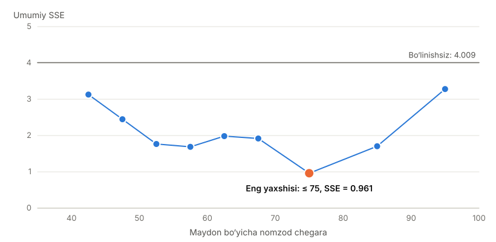
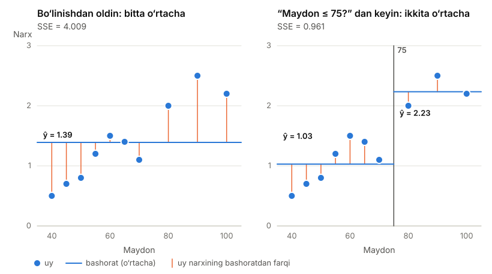
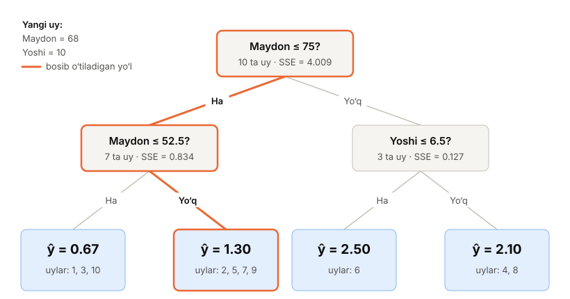
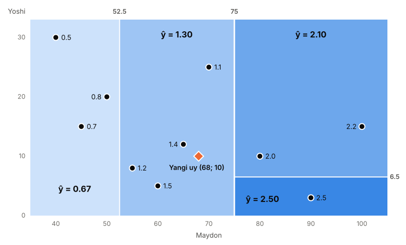
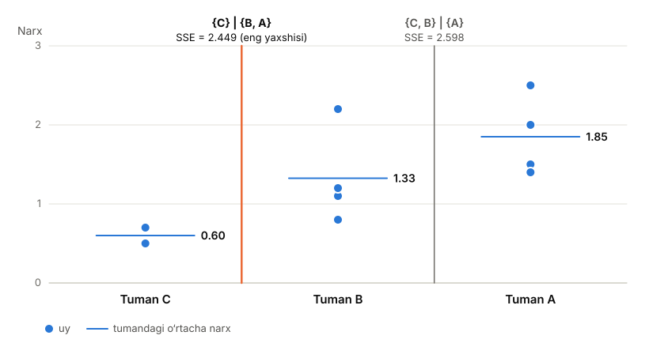

Decision Tree Regression
Decision Tree Regression — sonli qiymatni qarorlar daraxti yordamida bashorat qiluvchi regressiya algoritmi.
Masalan:
uy narxini bashorat qilish;
havo haroratini aniqlash;
suv yoki elektr sarfini baholash;
oylik daromadni bashorat qilish;
imtihon balini aniqlash.
Model ma’lumotlarni ketma-ket shartlar orqali kichik guruhlarga ajratadi. Har bir yakuniy guruh, ya’ni barg uchun shu guruhdagi \(y\) qiymatlarining o‘rtachasi bashorat sifatida olinadi.
1. Dataset
Quyidagi uylar datasetida maydon, xonalar soni va yosh bo‘yicha narx bashorat qilinadi:
№ |
Maydon \(x_1\) |
Xonalar \(x_2\) |
Yoshi \(x_3\) |
Narxi \(y\) |
|---|---|---|---|---|
1 |
50 |
2 |
20 |
0.8 |
2 |
60 |
3 |
5 |
1.5 |
3 |
45 |
2 |
15 |
0.7 |
4 |
80 |
4 |
10 |
2.0 |
5 |
70 |
3 |
25 |
1.1 |
6 |
90 |
4 |
3 |
2.5 |
7 |
55 |
2 |
8 |
1.2 |
8 |
100 |
5 |
15 |
2.2 |
9 |
65 |
3 |
12 |
1.4 |
10 |
40 |
1 |
30 |
0.5 |
2. Daraxt nima qiladi?
Daraxt uylarni savollar orqali guruhlarga bo‘ladi. Har bir guruhdagi narxlar bir-biriga iloji boricha yaqin bo‘lishi kerak.
Buning uchun faqat 2 ta formula kerak.
Bashorat — guruhdagi narxlarning o‘rtachasi:
Xatolik — narxlarning o‘rtachadan farqi kvadratlarining yig‘indisi:
Daraxtning maqsadi xatolikni eng ko‘p kamaytiradigan savolni topishdir.
3. Boshlanish
Barcha uylar bitta guruhda turibdi:
Xatolik katta, chunki arzon va qimmat uylar aralash.
4. Chegara qanday tanlanadi?
Alomat qiymatlari tartiblanadi.
Chegara nomzodlari sifatida qo‘shni qiymatlarning o‘rtasi olinadi: \(\frac{a+b}{2}\). Masalan, 50 va 55 orasida 52.5.
Har bir chegara uchun ikki guruhning xatoliklari hisoblanib, qo‘shiladi.
Eng kichik xatolik bergan chegara tanlanadi.
Maydon bo‘yicha sinov:
Savol |
Chap o‘rtacha |
O‘ng o‘rtacha |
Umumiy SSE |
|---|---|---|---|
Maydon ≤ 52.5 |
0.67 |
1.70 |
1.767 |
Maydon ≤ 57.5 |
0.80 |
1.78 |
1.688 |
Maydon ≤ 67.5 |
1.02 |
1.95 |
1.918 |
Maydon ≤ 75 |
1.03 |
2.23 |
0.961 |
Maydon ≤ 85 |
1.15 |
2.35 |
1.705 |
Quyidagi grafikda Maydonning barcha 9 ta nomzod chegarasi ko‘rsatilgan:


Har bir nomzod chegara sinab ko‘riladi va eng kichik SSE bergani tanlanadi.
Barcha alomatlarning eng yaxshi natijasi:
Alomat |
Eng yaxshi savol |
Umumiy SSE |
|---|---|---|
Maydon |
≤ 75 |
0.961 |
Xonalar |
≤ 3.5 |
0.961 |
Yoshi |
≤ 17.5 |
2.517 |
G‘olib savol:
Bo‘linish natijasida har bir guruh o‘z o‘rtachasini oladi va uylar bashoratga ancha yaqinlashadi:


To‘q sariq chiziqlar qisqargani sari xatolik kamayadi: \(4.009\longrightarrow0.961\).
5. Jarayon har bir guruhda takrorlanadi
Chap guruh (uylar 1, 2, 3, 5, 7, 9, 10):
Alomat |
Eng yaxshi savol |
Umumiy SSE |
|---|---|---|
Maydon |
≤ 52.5 |
0.147 |
Xonalar |
≤ 2.5 |
0.347 |
Yoshi |
≤ 13.5 |
0.234 |
O‘ng guruh (uylar 4, 6, 8):
Alomat |
Eng yaxshi savol |
Umumiy SSE |
|---|---|---|
Maydon |
≤ 85 |
0.045 |
Xonalar |
≤ 4.5 |
0.125 |
Yoshi |
≤ 6.5 |
0.020 |
6.5 soni 3 va 10 yoshning o‘rtasi. 6-uy eng yangi va eng qimmat bo‘lgani uchun
alohida ajraldi.
6. Tayyor daraxt


Tayyor daraxt. To‘q sariq chiziq yangi uyning yo‘lini ko‘rsatadi.
Xatolik bosqichma-bosqich kamayib boradi:
Bosqich |
Guruhlar soni |
SSE |
|---|---|---|
Boshlanish |
1 |
4.009 |
1-bo‘linish |
2 |
0.961 |
2-bo‘linish |
4 |
0.167 |
Yangi uy (Maydon = 68, Yoshi = 10) uchun bashorat:
68 ≤ 75? → Ha
68 ≤ 52.5? → Yo‘q
Natija: 1.30
Daraxtning har bir savoli alomatlar fazosini chiziq bilan ikkiga bo‘ladi. Har bir barg shu fazodagi bitta to‘g‘ri to‘rtburchakka mos keladi:


Nuqtalar yonidagi sonlar uylarning narxi. Yangi uy tushgan sohaning bashorati 1.30 ga teng.
7. Nega daraxtda Xonalar yo‘q?
Xonalar har bir qadamda sinab ko‘rildi, lekin birorta qadamda ham g‘olib bo‘lmadi:
1-qadamda Maydon bilan durang chiqdi, chunki ikkalasi ham aynan bir xil uylarni ajratadi. Durangda birinchi tekshirilgan alomat olinadi.
Ma’lumotlarda maydon oshgan sari xonalar soni ham oshadi, ya’ni Xonalar yangi ma’lumot bermaydi. Maydon esa aniqroq, chunki qiymatlari ko‘proq.
Daraxtga faqat foydali savollar kiradi. Keraksiz alomatlar o‘z-o‘zidan tashlab yuboriladi.
8. Qachon to‘xtatiladi?
Daraxt to‘xtatilmasa, har bir bargda bittadan uy qoladi va daraxt ma’lumotni yod
olib qo‘yadi, ya’ni overfitting qiladi. Buning oldini olish uchun cheklovlar
qo‘yiladi: maksimal chuqurlik (max_depth), bargdagi minimal uylar soni
(min_samples_leaf) va boshqalar.
9. Nominal alomat: Tuman qo‘shilgan misol
Datasetga nominal alomat, ya’ni Tuman ustuni qo‘shilgan bo‘lsin:
№ |
Maydon \(x_1\) |
Xonalar \(x_2\) |
Yoshi \(x_3\) |
Tuman \(x_4\) |
Narxi \(y\) |
|---|---|---|---|---|---|
1 |
50 |
2 |
20 |
B |
0.8 |
2 |
60 |
3 |
5 |
A |
1.5 |
3 |
45 |
2 |
15 |
C |
0.7 |
4 |
80 |
4 |
10 |
A |
2.0 |
5 |
70 |
3 |
25 |
B |
1.1 |
6 |
90 |
4 |
3 |
A |
2.5 |
7 |
55 |
2 |
8 |
B |
1.2 |
8 |
100 |
5 |
15 |
B |
2.2 |
9 |
65 |
3 |
12 |
A |
1.4 |
10 |
40 |
1 |
30 |
C |
0.5 |
Asosiy farq
A, B, C orasida tartib yo‘q, shuning uchun “Tuman ≤ B?” degan savol ma’nosiz. Uning o‘rniga savol “Tuman shu guruhga kiradimi?” shaklida beriladi, masalan:
Tumanlar bo‘yicha o‘rtacha narx
Tuman |
Uylar |
Narxlar |
O‘rtacha |
|---|---|---|---|
A |
2, 4, 6, 9 |
1.5, 2.0, 2.5, 1.4 |
1.85 |
B |
1, 5, 7, 8 |
0.8, 1.1, 1.2, 2.2 |
1.33 |
C |
3, 10 |
0.7, 0.5 |
0.60 |
Mumkin bo‘lgan bo‘linishlar
Savol |
“Ha” o‘rtacha |
“Yo‘q” o‘rtacha |
Umumiy SSE |
|---|---|---|---|
Tuman ∈ {A}? |
1.85 |
1.08 |
2.598 |
Tuman ∈ {B}? |
1.33 |
1.43 |
3.981 |
Tuman ∈ {C}? |
0.60 |
1.59 |
2.449 |
Xatolik oldingidek \(\sum(y_i-\hat{y})^2\) formula bilan hisoblanadi.
\(k\) ta qiymat bo‘lsa, bo‘linishlar soni quyidagicha bo‘ladi:
Qisqa yo‘l
Kategoriyalar o‘rtacha narx bo‘yicha tartiblanadi:
Keyin xuddi miqdoriy alomatdagidek faqat qo‘shni chegaralar tekshiriladi:


Tartiblangan tumanlar orasida faqat ikkita chegara tekshiriladi.
Shunday qilib, barcha kombinatsiyalarni sinamasdan, \(k-1\) ta tekshiruvning o‘zida eng yaxshi bo‘linish topiladi.
Boshqa alomatlar bilan solishtirish
Alomat |
Eng yaxshi savol |
Umumiy SSE |
|---|---|---|
Maydon |
≤ 75 |
0.961 |
Xonalar |
≤ 3.5 |
0.961 |
Yoshi |
≤ 17.5 |
2.517 |
Tuman |
∈ {C} |
2.449 |
Bu misolda Tuman g‘olib bo‘lmadi, shuning uchun daraxt o‘zgarmaydi. Lekin keyingi har bir qadamda Tuman ham boshqa alomatlar qatorida sinab ko‘riladi.
Amaliyotda: one-hot encoding
Ko‘p kutubxonalar, masalan sklearn, faqat raqamlar bilan ishlaydi. Shuning uchun Tuman ustuni raqamlarga aylantiriladi:
Tuman |
Tuman_A |
Tuman_B |
Tuman_C |
|---|---|---|---|
A |
1 |
0 |
0 |
B |
0 |
1 |
0 |
C |
0 |
0 |
1 |
Shunda daraxt Tuman_C ≤ 0.5? deb so‘raydi. Bu “C tumanida emasmi?” degan savol
bilan bir xil.
Warning
A = 1, B = 2, C = 3 deb raqam berish noto‘g‘ri. Bunda daraxt “B tumani A va C ning o‘rtasida” degan, aslida mavjud bo‘lmagan tartibni o‘rganib oladi.
10. Muhim xulosa
Har bir qadamda barcha alomatlar va barcha chegaralar sinab ko‘riladi, xatolikni eng ko‘p kamaytirgan savol tanlanadi va bu jarayon guruhlar ichida takrorlanadi. Bashorat esa uy tushgan guruhdagi narxlarning o‘rtachasiga teng: